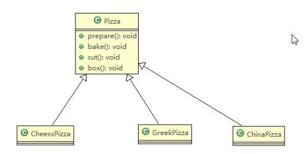
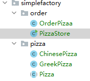
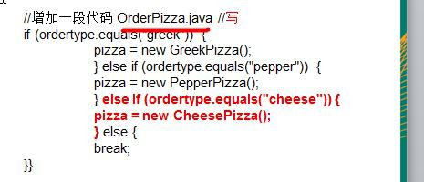
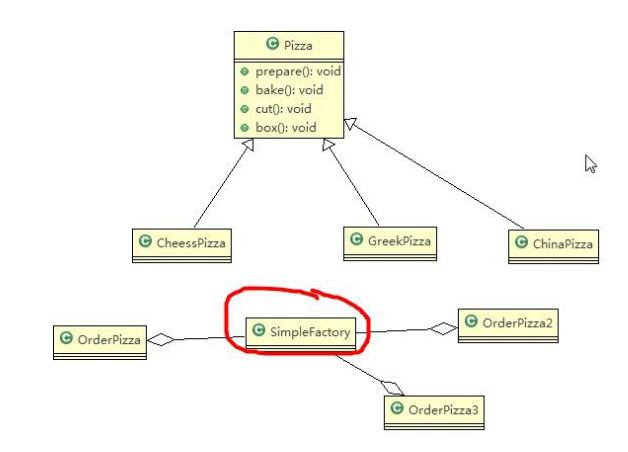
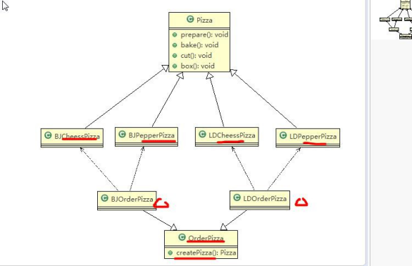
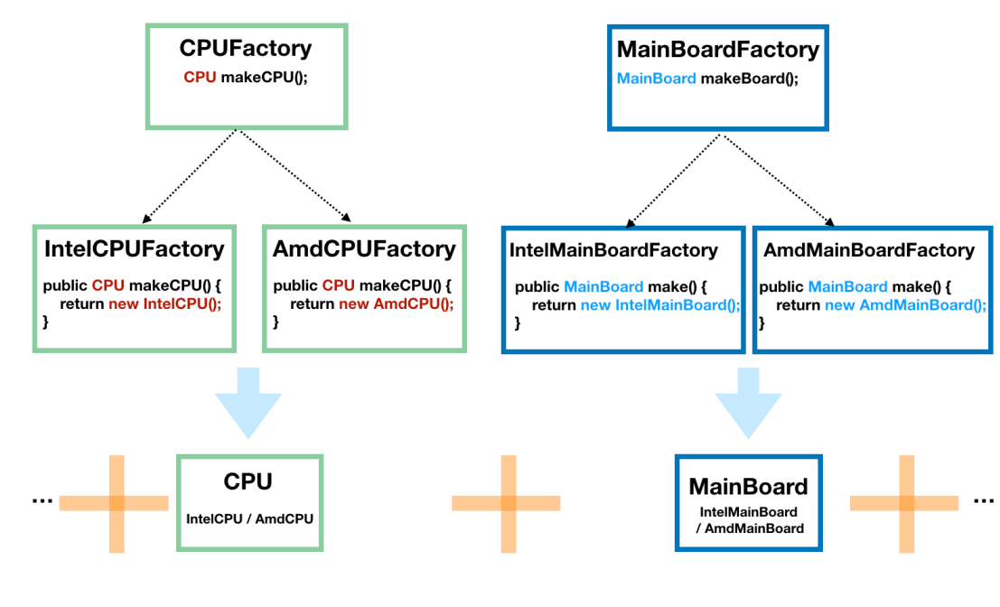
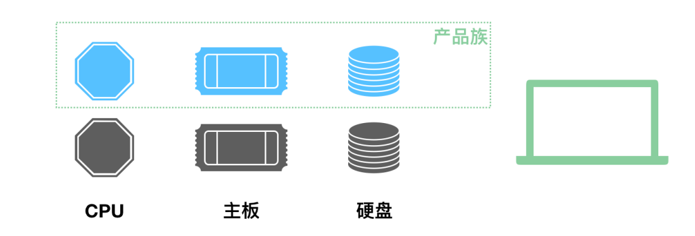
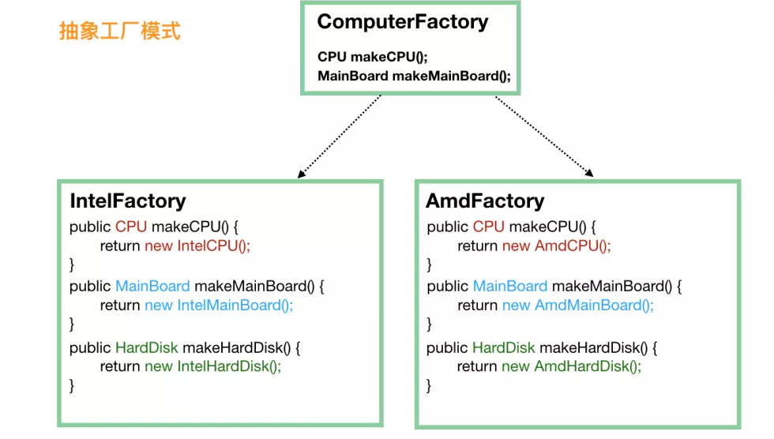

# 工厂模式
# 简单工厂模式
🎉需求
看一个披萨的项目：要便于披萨种类的扩展，要便于维护
披萨的种类很多 (比如 GreekPizz、CheesePizz 等)
披萨的制作有 prepare，bake, cut, box
完成披萨店订购功能。
# 使用传统的方式来完成

# ✨结构

抽象 Pizza 类
package com.wxf.design.factory.simplefactory.pizza; | |
/** | |
* @author WangXuefeng | |
* @version 1.0 | |
* @date 2021/5/25 20:58 | |
* @description | |
*/ | |
public abstract class Pizza { | |
protected String name; | |
public abstract void prepare(); | |
public void brake(){ | |
System.out.println(name + "制作"); | |
} | |
public void cut(){ | |
System.out.println(name + "剪切"); | |
} | |
public void box(){ | |
System.out.println(name + "打包"); | |
} | |
public void setName(String name) { | |
this.name = name; | |
} | |
} |
继承实现
public class ChinesePizza extends Pizza { | |
public void prepare() { | |
System.out.println("Chinese披萨！"); | |
} | |
} |
运行
public class OrderPizaa { | |
public OrderPizaa(){ | |
Pizza pizza = null; | |
String type = ""; | |
do { | |
type = getInput(); | |
if("chinese".equals(type)){ | |
pizza = new ChinesePizza(); | |
pizza.setName("C披萨"); | |
}else if("greek".equals(type)){ | |
pizza = new GreekPizza(); | |
pizza.setName("G披萨"); | |
} else { | |
break; | |
} | |
pizza.prepare(); | |
pizza.brake(); | |
pizza.cut(); | |
pizza.box(); | |
} while (true); | |
} | |
public String getInput(){ | |
Scanner scanner = new Scanner(System.in); | |
System.out.print("输入："); | |
return scanner.next(); | |
} | |
public static void main(String[] args) { | |
new OrderPizaa(); | |
} | |
} |
# 传统的方式的优缺点
优点是比较好理解，简单易操作。
缺点是违反了设计模式的 ocp 原则，即对扩展开放，对修改关闭。即当我们给类增加新功能的时候，尽量不修改代码，或者尽可能少修改代码。
| | |
| ---- | ----------------------------------- |
| |  |
比如我们这时要新增加一个 Pizza 的种类 **(Pepper 披萨)**，我们需要做如下修改。如果我们增加一个 Pizza 类，只要是订购 Pizza 的代码都需要修改.
# 改进的思路分析
** 分析：** 修改代码可以接受，但是如果我们在其它的地方也有创建 Pizza 的代码，就意味着，也需要修改，而创建 Pizza
的代码，往往有多处。
** 思路：** 把创建 Pizza 对象封装到一个类中，这样我们有新的 Pizza 种类时，只需要修改该类就可，其它有创建到 Pizza
对象的代码就不需要修改了。-> 简单工厂模式
# 🙌基本介绍
- 简单工厂模式是属于创建型模式，是工厂模式的一种。简单工厂模式是由一个工厂对象决定创建出哪一种产 品类的实例。简单工厂模式是工厂模式家族中最简单实用的模式
- 简单工厂模式：定义了一个创建对象的类，由这个类来封装实例化对象的行为 (代码)
- 在软件开发中，当我们会用到大量的创建某种、某类或者某批对象时，就会使用到工厂模式
# 使用简单工厂模式
简单工厂模式的设计方案：定义一个可以实例化 Pizaa 对象的类，封装创建对象的代码

通过上面关系类图来实现代码就可以完成只需要维护一个工厂，如果新增其他种类 pizza 在工厂进行修改即可，其他 order 类只需要去工厂获取自己想要的而不去关心具体的实现。
🐱🏍代码
public class SimpleFactory { | |
public Pizza create(String type){ | |
Pizza pizza = null; | |
if("chinese".equals(type)){ | |
pizza = new ChinesePizza(); | |
pizza.setName("C披萨"); | |
}else if("greek".equals(type)){ | |
pizza = new GreekPizza(); | |
pizza.setName("G披萨"); | |
} | |
return pizza; | |
} | |
// 静态工厂 使用更简单，但是无法从外面传入 | |
public static Pizza createStatic(String type){ | |
Pizza pizza = null; | |
if("chinese".equals(type)){ | |
pizza = new ChinesePizza(); | |
pizza.setName("C披萨"); | |
}else if("greek".equals(type)){ | |
pizza = new GreekPizza(); | |
pizza.setName("G披萨"); | |
} | |
return pizza; | |
} | |
} |
order 类就可以聚合工厂类到 order 类中
public class OrderPizzaUseFactory { | |
SimpleFactory simpleFactory; | |
public OrderPizzaUseFactory(SimpleFactory simpleFactory){ | |
setSimpleFactory(simpleFactory); | |
} | |
public void setSimpleFactory(SimpleFactory simpleFactory){ | |
this.simpleFactory = simpleFactory; | |
String type = ""; | |
do { | |
type = getInput(); | |
Pizza pizza = simpleFactory.create(type); | |
if(pizza != null){ | |
pizza.prepare(); | |
pizza.brake(); | |
pizza.cut(); | |
pizza.box(); | |
}else { | |
System.out.println("订购失败！"); | |
break; | |
} | |
}while (true); | |
} | |
public String getInput(){ | |
Scanner scanner = new Scanner(System.in); | |
System.out.print("输入："); | |
return scanner.next(); | |
} | |
public static void main(String[] args) { | |
new OrderPizzaUseFactory(new SimpleFactory()); | |
} | |
} |
# 工厂方法模式
🐱👤新的需求
披萨项目新的需求：客户在点披萨时，可以点不同口味的披萨，比如 北京的奶酪 pizza、北京的胡椒 pizza 或者是伦敦的奶酪 pizza、伦敦的胡椒 pizza。
思路 1：使用简单工厂模式，创建不同的简单工厂类，比如 BJPizzaSimpleFactory、LDPizzaSimpleFactory 等等。从当前这个案例来说，也是可以的，但是考虑到项目的规模，以及软件的可维护性、可扩展性并不是特别好
思路 2：使用工厂方法模式
# 工厂方法模式介绍
工厂方法模式设计方案：将披萨项目的实例化功能抽象成抽象方法，在不同的口味点餐子类中具体实现。
工厂方法模式：定义了一个创建对象的抽象方法，由子类决定要实例化的类。工厂方法模式将对象的实例化推迟到子类。
# 工厂方法模式应用案例
披萨项目新的需求：客户在点披萨时，可以点不同口味的披萨，比如 北京的奶酪 pizza、北京的胡椒 pizza 或者是伦敦的奶酪 pizza、伦敦的胡椒 pizza
思路分析图解
|  |
🐱🏍代码
public abstract class OrderPizzaFactory { | |
// 由子类去实现，当子类初始化会先调用父类的构造方法，而构造方法中的 createPizza | |
// 则是对应的子类的实现方法 | |
protected abstract Pizza createPizza(String type); | |
public OrderPizzaFactory() { | |
Pizza pizza; | |
String type = ""; | |
do { | |
type = getInput(); | |
pizza = createPizza(type); | |
pizza.prepare(); | |
pizza.brake(); | |
pizza.cut(); | |
pizza.box(); | |
} while (true); | |
} | |
public String getInput() { | |
Scanner scanner = new Scanner(System.in); | |
System.out.print("输入："); | |
return scanner.next(); | |
} | |
} |
public class LDOrderPizza extends OrderPizzaFactory { | |
protected Pizza createPizza(String type) { | |
Pizza pizza = null; | |
if("cheese".equals(type)){ | |
pizza = new LDCheesePizza(); | |
pizza.setName("伦敦奶酪披萨"); | |
} else if("greek".equals(type)){ | |
pizza = new LDGreekPizza(); | |
pizza.setName("伦敦胡椒披萨"); | |
} | |
return pizza; | |
} | |
} |
public class BJOrderPizza extends OrderPizzaFactory { | |
protected Pizza createPizza(String type) { | |
Pizza pizza = null; | |
if("cheese".equals(type)){ | |
pizza = new BJCheesePizza(); | |
pizza.setName("北京奶酪披萨"); | |
} else if("greek".equals(type)){ | |
pizza = new BJGreekPizza(); | |
pizza.setName("北京胡椒披萨"); | |
} | |
return pizza; | |
} | |
} |
new BJOrderPizza();//new 的时候会先走父类的构造方法然后调用子类重写的 createPizza 方法 |
# 抽象工厂模式
当涉及到产品族的时候，就需要引入抽象工厂模式了。
一个经典的例子是造一台电脑。我们先不引入抽象工厂模式，看看怎么实现。
因为电脑是由许多的构件组成的，我们将 CPU 和主板进行抽象，然后 CPU 由 CPUFactory 生产，主板由 MainBoardFactory 生产，然后，我们再将 CPU 和主板搭配起来组合在一起，如下图：

这个时候的客户端调用是这样的：
// 得到 Intel 的 CPU | |
CPUFactory cpuFactory = new IntelCPUFactory(); | |
CPU cpu = intelCPUFactory.makeCPU(); | |
// 得到 AMD 的主板 | |
MainBoardFactory mainBoardFactory = new AmdMainBoardFactory(); | |
MainBoard mainBoard = mainBoardFactory.make(); | |
// 组装 CPU 和主板 | |
Computer computer = new Computer(cpu, mainBoard); |
单独看 CPU 工厂和主板工厂，它们分别是前面我们说的工厂模式。这种方式也容易扩展，因为要给电脑加硬盘的话，只需要加一个 HardDiskFactory 和相应的实现即可，不需要修改现有的工厂。
但是，这种方式有一个问题，那就是如果 Intel 家产的 CPU 和 AMD 产的主板不能兼容使用，那么这代码就容易出错，因为客户端并不知道它们不兼容，也就会错误地出现随意组合。
下面就是我们要说的产品族的概念，它代表了组成某个产品的一系列附件的集合：

当涉及到这种产品族的问题的时候，就需要抽象工厂模式来支持了。我们不再定义 CPU 工厂、主板工厂、硬盘工厂、显示屏工厂等等，我们直接定义电脑工厂，每个电脑工厂负责生产所有的设备，这样能保证肯定不存在兼容问题。

这个时候，对于客户端来说，不再需要单独挑选 CPU 厂商、主板厂商、硬盘厂商等，直接选择一家品牌工厂，品牌工厂会负责生产所有的东西，而且能保证肯定是兼容可用的。
public static void main(String[] args) { | |
// 第一步就要选定一个 “大厂” | |
ComputerFactory cf = new AmdFactory(); | |
// 从这个大厂造 CPU | |
CPU cpu = cf.makeCPU(); | |
// 从这个大厂造主板 | |
MainBoard board = cf.makeMainBoard(); | |
// 从这个大厂造硬盘 | |
HardDisk hardDisk = cf.makeHardDisk(); | |
// 将同一个厂子出来的 CPU、主板、硬盘组装在一起 | |
Computer result = new Computer(cpu, board, hardDisk); | |
} |
当然，抽象工厂的问题也是显而易见的，比如我们要加个显示器，就需要修改所有的工厂，给所有的工厂都加上制造显示器的方法。这有点违反了对修改关闭，对扩展开放这个设计原则。